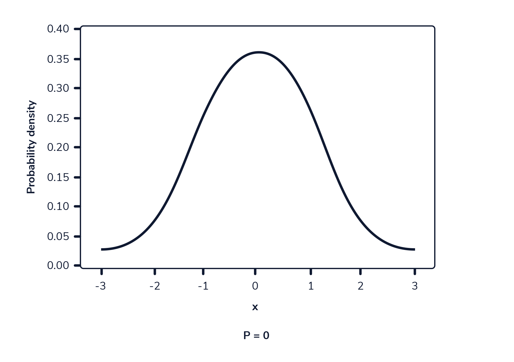

import matplotlib.pyplot as plt
import numpy as npProbability
Probability is a branch of mathematics that allows us to quantify uncertainty. In our daily lives, we often use probability to make decisions, even without thinking about it!
For example, many weather reports give a percent chance that it will rain. If we hear that there is an 80 percent chance of rain, we probably are not going to make many plans outside. However, if there is only a 5 percent chance of rain, we may feel comfortable planning a picnic.
In this article, we are going to build a foundation for understanding probability. To do this, we are going to explore a field of mathematics called set theory.
Set Theory
Set theory is a branch of mathematics based around the concept of sets. In simple terms, a set is a collection of things. For example, we can use a set to represent items in a backpack. We might have:
{Book,Paper,Folder,Hat,Pen,Snack}Notationally, mathematicians often represent sets with curly braces. Sets also follow two key rules:
- Each element in a set is distinct.
- The elements in a set are in no particular order.
Therefore, we can say:
{1,2,3,4,5}={5,3,2,4,1}When defining a set, we often use a capital letter. For example:
A={1,2,3,4,5}Sets can also contain subsets. Set A is a subset of set B if all the elements in A exist within B. For example:
A={1,2,3}
B={1,2,3,4,5}Here, set A is a subset of B because all elements of A are contained within B.
Experiments and Sample Spaces
In probability, an experiment is something that produces observation(s) with some level of uncertainty. A sample point is a single possible outcome of an experiment. Finally, a sample space is the set of all possible sample points for an experiment.
For example, suppose that we run an experiment where we flip a coin twice and record whether each flip results in heads or tails. There are four sample points in this experiment: two heads (HH), tails and then heads (TH), heads and then tails (HT), or two tails (TT). We can write the full sample space for this experiment as follows:
S={HH,TT,HT,TH}Suppose we are interested in the probability of one specific outcome: HH. A specific outcome (or set of outcomes) is known as an event and is a subset of the sample space. Three events we might look at in this sample space are:
Getting Two Heads
A={HH}
Getting Two Tails
B={TT}
Getting Both a Heads and Tails
C={HT,TH}The frequentist definition of probability is as follows: If we run an experiment an infinite amount of times, the probability of each event is the proportion of times it occurs. Unfortunately, we don’t have the ability to flip two coins an infinite amount of times — but we can estimate probabilities by choosing some other large number, such as 1000. Let’s give it a try!
Okay, we have flipped two coins 1000 times. Wasn’t that FUN? Here are each of the outcomes and the number of times we observed each one:
- {HH}: 252
- {TT}: 247
- {HT}: 256
- {TH}: 245
To calculate the estimated probability of any one outcome, we use the following formula:
P(Event)= Number of Times Event Occurred / Total Number of TrialsIn this scenario, a trial is a single run of our experiment (two coin flips). So, the probability of two heads on two coin flips is approximately:
P(HH)=252/1000 = 0.252Based on these 1000 trials, we would estimate there is a 25.2 percent chance of getting two heads on two coin flips. This is great! However, if we do this same procedure over and over again, we may get slightly different results. For example, if we repeat the experiment another 1000 times, we might get two heads only 24.2 percent of the time.
If we want to feel confident that we are close to the true probability of a particular event, we can leverage the law of large numbers.
Law of Large Numbers
We can’t repeat our random experiment an infinite amount of times (as much FUN as that would be!). However, we can still flip both coins a large number of times. As we flip both coins more and more, the observed proportion of times each event occurs will converge to its true probability. This is called the law of large numbers.
Let’s observe the law of large numbers in real-time. We will use Python to simulate flipping both coins as many times as we want and watch the proportion of two heads converge to its true probability.
Let’s walk through each part of the code below one step at a time. You do not need to worry about every line of code, but understanding the overall objective will help you build your understanding of probability.
Coding question
In the code editor below, we have written out a function called coin_flip_experiment() that simulates flipping two fair coins. Using a for loop we run coin_flip_experiment() a specific number of times. As this loop iterates, we track how often both coins come up as heads. Finally, using matplotlib, we plot the proportion of experiments resulting in two heads after each trial.
The number of times coin_flip_experiment() runs is determined by the num_trials variable on line 21. Currently, this variable is set to 5. Run the program a few times. On the resulting plot, the orange horizontal line is the true probability of observing two heads (0.25). The blue line is the proportion of heads we see throughout our trials. What do you notice about the blue line after each run?
You should see that the proportion of two heads after five trials is inconsistent. In some experiments, we may see zero observations of two heads, while in others, we may see almost all five observations are two heads. To simulate the law of large numbers, we need to do more trials. Set the num_trials variable to different values, such as these below:
- 100
- 1000
- 100000
Take note of what you observe. Where does the blue line on the graph converge to after many trials?
def coin_flip_experiment():
# defining our two coins as lists
coin1 = ['Heads', 'Tails']
coin2 = ['Heads', 'Tails']
# "flipping" both coins randomly
coin1_result = np.random.choice(coin1)
coin2_result = np.random.choice(coin2)
# checking if both flips are heads
if coin1_result == 'Heads' and coin2_result == 'Heads':
return 1
else:
return 0
# how many times we run the experiment
num_trials = 100000
prop = []
flips = []
# keep track of the number of times heads pops up twice
two_heads_counter = 0
# perform the experiment five times
for flip in range(num_trials):
# if both coins are heads add 1 to the counter
two_heads_counter += coin_flip_experiment()
# keep track of the proportion of two heads at each flip
prop.append(two_heads_counter/(flip+1))
# keep a list for number of flips
flips.append(flip+1)
# plot all flips and proportion of two heads
plt.plot(flips, prop, label='Experimental Probability')
plt.xlabel('Number of Flips')
plt.ylabel('Proportion of Two Heads')
plt.hlines(0.25, 0, num_trials, colors='orange', label='True Probability')
plt.legend()
plt.show()After many trials the blue line converges to the true probability as evidenced by the above graph which represents the results of 100000 trials.
After setting num_trials to large numbers, we see that the proportion of trials resulting in two heads converges to 0.25. The horizontal line at y=0.25 is completely covered after about one hundred thousand flips. By simulating a huge number of flips in Python, we have shown that the true probability of seeing two heads on two separate coin flips is equal to 0.25.
RULES OF PROBABILITY
prob_coin_and_dice = round(0.5 * (1/6) * 100,2)
prob_coin_and_dice8.33There are 12 possible combinations of outcomes when flipping a coin and rolling a dice :
H 1 T 1
H 2 T 2
H 3 T 3
H 4 T 4
H 5 T 5
H 6 T 6The individual probability of each outcome is therefore 1/12 = 8.33 %. The formal representation of this is :
P(Coin) Head or Tail = 1 / 2 x P(Dice) 1 or 2 or 3 or 4 or 5 or 6 = 1 / 6 = 8.33%Union
The union of two sets encompasses any element that exists in either one or both of them. We can represent this visually as a Venn diagram.
For example, let’s say we have two sets, A and B. A represents rolling an odd number with a six-sided die (the set {1, 3, 5}). B represents rolling a number greater than two (the set {3, 4, 5, 6}). The union of these two sets would be everything in either set A, set B, or both: {1, 3, 4, 5, 6}. We can write the union of two events mathematically as (A or B).
Intersection
The intersection of two sets encompasses any element that exists in both of the sets. Visually:
The intersection of the above sets (A represents rolling an odd number on a six-sided die and B represents rolling a number greater than two) includes any value that appears in both sets: {3, 5}. We can write the intersection of two events mathematically as (A and B).
Complement
Lastly, the complement of a set consists of all possible outcomes outside of the set. Visually:
Consider set A from the above example (rolling an odd number on a 6-sided die). The complement of this set would be rolling an even number: {2, 4, 6}. We can write the complement of set A as AC. One key feature of complements is that a set and its complement cover the entire sample space. In this die roll example, the set of even numbers and odd numbers would cover all possible rolls: {1, 2, 3, 4, 5, 6}.
Independence and Dependence
Imagine that we flip a fair coin 5 times and get 5 heads in a row. Does this affect the probability of getting heads on the next flip? Even though we may feel like it’s time to see “tails”, it is impossible for a past coin flip to impact a future one. The fact that previous coin flips do not affect future ones is called independence. Two events are independent if the occurrence of one event does not affect the probability of the other.
Are there cases where previous events DO affect the outcome of the next event? Suppose we have a bag of five marbles: two marbles are blue and three marbles are red. If we take one marble out of the bag, what is the probability that the second marble we take out is blue?
This describes two events that are dependent. The probability of grabbing a blue marble in the second event depends on whether we take out a red or a blue marble in the first event.
What if we had put back the first marble? Is the probability that we pick a blue marble second independent or dependent on what we pick out first? In this case, the events would be independent.
Why do we care if events are independent or dependent? Knowing this helps us quantify the probability of events that depend on preexisting knowledge. This helps researchers understand and predict complex processes such as:
- Effectiveness of vaccines
- The weather on a particular day
- Betting odds for professional sports games
We will explore applications of this further in the lesson!
Q1. We pick out two cards from a standard deck of 52 cards without replacement. Event A is that we pick an Ace on the first draw. Event B is that we pick an Ace on the second draw. Are events A and B independent?
A1. Dependent. The first draw has an impact on the probability of picking an Ace on the second draw as there are less Aces to choose from.
Q2. Suppose we roll a six-sided die two times. Event A is that we roll a 3 on the first roll. Event B is that we roll a 3 on the second roll. Are events A and B independent?
A2. Independent. The outcome of rolling a dice does not impact the outcome of any simultaneous or future rolls of a dice.
Q3. Suppose we flip a coin ten times. Event A is that we flip all heads on the first five flips. Event B is that we flip all heads on the second five flips. Are events A and B independent?
A3. Independent. The outcome of flipping a coin does not impact the outcome of any simultaneous or future flips of a coin.
Mutually Exclusive Events
Two events are considered mutually exclusive if they cannot occur at the same time. For example, consider a single coin flip: the events “tails” and “heads” are mutually exclusive because we cannot get both tails and heads on a single flip.
We can visualize two mutually exclusive events as a pair of non-overlapping circles. They do not overlap because there is no outcome for one event that is also in the sample space for the other:
What about events that are not mutually exclusive? If event A is rolling an odd number and event B is rolling a number greater than two, these events are not mutually exclusive. They have an intersection of {3, 5}. Any events that have a non-empty intersection are not mutually exclusive.
Q1. We have a bag of five marbles: three are green and two are blue. Suppose that we pick one marble from the bag. Event A is that the marble is green. Event B is that the marble is blue. Are these events mutually exclusive?
A1. Mutually exclusive. The one chosen marble cannot be both green and blue.
Q2. We roll a die once. Event A is rolling an odd number. Event B is rolling a number greater than four. Are these events mutually exclusive?
A2. These events have an intersection of {5}.
Q3. We roll a die once. Event A is rolling an even number. Event B is rolling a number less than two. Are these events mutually exclusive?
A3. These events are mutually exclusive. There is no intersection as Event B’s outcome (1) does not meet the criteria of Event A (even).
Addition Rule
Now, it’s time to apply these concepts to calculate probabilities.
Non-mutually exclusive events
Let’s go back to one of our first examples: event A is rolling an odd number on a six-sided die and event B is rolling a number greater than two. What if we want to find the probability of one or both events occurring? This is the probability of the union of A and B:
P(A or B)The addition rule formula, which is:
P(A or B)= P(A) + P(B) − P(A and B) #we deduct P (A and B) because both events can happen and covered by P(A) and P(B)We subtract the intersection of events A and B because it is included twice in the addition of P(A) and P(B).
Mutually exclusive events
What if the events are mutually exclusive? On a single die roll, if event A is that the roll is less than or equal to 2 and event B is that the roll is greater than or equal to 5, then events A and B cannot both happen.
For mutually exclusive events, the addition rule formula is:
P(A or B) = P(A) + P(B) # note that this time we don't deduct the P(A and B) because both events can't happenQ1. There is a function, prob_a_or_b() which calculates the addition rule. It takes in three arguments:
a: an event with possible outcomes represented as a set
b: an event with possible outcomes represented as a set
all_possible_outcomes: a set that represents all possible outcomes of a sample spaceIn prob_a_or_b(), the probability of a and b as well as the probabilty of their intersection has been calculated in the following variables:
prob_a
prob_b
prob_interUsing these variables, write a return statement that returns the probability of events a or b occurring.
def prob_a_or_b(a, b, all_possible_outcomes):
# probability of event a
prob_a = len(a)/len(all_possible_outcomes)
# probability of event b
prob_b = len(b)/len(all_possible_outcomes)
# intersection of events a and b
inter = a.intersection(b)
# probability of intersection of events a and b
prob_inter = len(inter)/len(all_possible_outcomes)
# add return statement here
return prob_a + prob_b - prob_inter # this is my solutionQ2. there are three different random events outlined through sets.Call prob_a_or_b() using the following variables: - evens - odds - all_possible_rolls
# rolling a die once and getting an even number or an odd number
evens = {2, 4, 6}
odds = {1, 3, 5}
all_possible_rolls = {1, 2, 3, 4, 5, 6}
# call function here first
print(prob_a_or_b(evens, odds, all_possible_rolls))1.0A2. As expected the probability of rolling either an even or odd number is 1.0 or 100%.
# rolling a die once and getting an odd number or a number greater than 2
odds = {1, 3, 5}
greater_than_two = {3, 4, 5, 6}
all_possible_rolls = {1, 2, 3, 4, 5, 6}
# call function here second
print(prob_a_or_b(odds, greater_than_two, all_possible_rolls))0.8333333333333333As expected the probability of getting an odd number or a number greater than 2 (not mutually exclusive) is calculated as P(odds) = 3/6 + P(greater_than_two) = 4/6 less P(both) i.e intersection 3,5 = 2/6. This gives 3/6 + 4/6 - 2/6 = 5/6 = 83.33%.
# selecting a diamond card or a face card from a standard deck of cards
diamond_cards = {'ace_diamond', '2_diamond', '3_diamond', '4_diamond', '5_diamond', '6_diamond', '7_diamond', '8_diamond', '9_diamond', '10_diamond', 'jack_diamond', 'queen_diamond', 'king_diamond'}
face_cards = {'jack_diamond', 'jack_spade', 'jack_heart', 'jack_club', 'queen_diamond', 'queen_spade', 'queen_heart', 'queen_club', 'king_diamond', 'king_spade', 'king_heart', 'king_club'}
# all cards in a deck representing the entire sample space
all_possible_cards = {'ace_diamond', '2_diamond', '3_diamond', '4_diamond', '5_diamond', '6_diamond', '7_diamond', '8_diamond', '9_diamond', '10_diamond', 'jack_diamond', 'queen_diamond', 'king_diamond', 'ace_heart', '2_heart', '3_heart', '4_heart', '5_heart', '6_heart', '7_heart', '8_heart', '9_heart', '10_heart', 'jack_heart', 'queen_heart', 'king_heart', 'ace_spade', '2_spade', '3_spade', '4_spade', '5_spade', '6_spade', '7_spade', '8_spade', '9_spade', '10_spade', 'jack_spade', 'queen_spade', 'king_spade', 'ace_club', '2_club', '3_club', '4_club', '5_club', '6_club', '7_club', '8_club', '9_club', '10_club', 'jack_club', 'queen_club', 'king_club'}
# call function here third
print(prob_a_or_b(diamond_cards, face_cards, all_possible_cards))0.4230769230769231As expected the probability of getting a diamond card or a face card (not mutually exclusive) is calculated as P(diamonds) = 13/52 + P(face_cards) = 12/52 less P(both) i.e intersection jqk diamonds = 3/52. This gives 13/52 + 12/52 - 3/52 = 22/52 = 42.3%.
Conditional Probability
If we want to calculate the probability that a pair of dependent events both occur, we need to define conditional probability. Using a bag of marbles as an example, let’s remind ourselves of the definition of dependent events:

If we pick two marbles from a bag of five marbles without replacement, the probability that the second marble is red depends on the color of the first marble. We have a special name for this: conditional probability. In short, conditional probability measures the probability of one event occurring, given that another one has already occurred.
Notationally, we denote the word “given” with a vertical line. For example, if we want to represent the probability that we choose a red marble given the first marble is blue, we can write:
P(Red Second∣Blue First)From the above diagram, we know that:
P(Red Second∣Blue First) = 3 / 4What if we picked out two marbles with replacement? What does the conditional probability look like? Well, let’s think about this. Regardless of which marble we pick out first, it will be put back into the bag. Therefore, the probability of picking out a red marble or a blue marble second is unaffected by the first outcome.
Therefore, for independent events, we can say the following:
P(A∣B)=P(A)
and
P(B∣A)=P(B)Multiplication Rule
We have looked at the addition rule, which describes the probability one event OR another event (or both) occurs. What if we want to calculate the probability that two events happen simultaneously? For two events, A and B, this is P(A and B) or the probability of the intersection of A and B.
General Formula
The general formula for the probability that two events occur simultaneously is:
P(A and B) = P(A) * P(B∣A)However, for independent events, we can simplify this formula slightly.
Dependent Events
Let’s go back to our bag of marbles example. We have five marbles: two are blue, and three are red. We pick two marbles without replacement. What if we want to know the probability of choosing a blue marble first AND a blue marble second?
Taking conditional probability into account, the multiplication rule for these two dependent events is:
P(Blue 1st and Blue 2nd)=P(Blue 1st) * P(Blue 2nd∣Blue 1st)
P(Blue 1st and Blue 2nd)= 2/5 * 1/4
P(Blue 1st and Blue 2nd)= 1/10This is one potential outcome when picking two marbles out of the bag. One way to visualize all possible outcomes of a pair of events is a tree diagram.
Tree diagrams have the following properties:
- Each branch represents a specific set of events.
- The probabilities the terminal branches (all possible sets of outcomes) sum to one.
- We multiply across branches (using the multiplication rule!) to calculate the probability that each branch (set of outcomes) will occur.
Independent Events
For two independent events, the multiplication rule becomes less complicated. The probability of two independent events occurring is:
P(A and B)= P(A) * P(B)This is because the following is true for independent events:
P(B∣A)=P(B)Let’s look at the simplest example: flipping a fair coin twice. Event A is that we get tails on the first flip, and event B is that we get tails on the second flip. P(A) = P(B) = 0.5, so according to our formula, the probability of getting tails on both
P(A and B)= 0.5 * 0.5 = 0.25Visually on a tree diagram, we see:
Conditional Probability Continued
We have introduced conditional probability as a part of the multiplication rule for dependent events. However, let’s go a bit more in-depth with it as it is a powerful probability tool that has real-world applications.
For this problem, we will follow along the tree diagram below :
Suppose that the following is true (this is shown in the first set of branches in the diagram):
- 20 percent of the population has strep throat.
- 80 percent of the population does not have strep throat.
Now suppose that we test a bunch of people for strep throat. The possible results of these tests are shown in the next set of branches:
If a person has strep throat, there is an 85% chance their test will be positive and a 15% chance it will be negative. This is labeled as:
P(+∣ST)=0.85 and P(−∣ST)=0.15If a person does not have strep throat, there is a 98% chance their test will be negative and a 2% chance it will be positive. This can be labeled as:
P(−∣NO ST)=0.98 and P(+∣NO ST)=0.02
Finally, let’s look at the four possible pairs of outcomes that form the terminal branches of our diagram:
P(ST and +)=0.17
P(ST and -)=0.03
P(NO ST and +)=0.016
P(NO ST and -)=0.784Together, these add up to one since they capture all potential outcomes after patients are tested.
It’s great that we have all this information. However, we are missing something. If someone gets a positive result, what is the probability that they have strep throat? Notationally, we can write this probability as:
P(ST∣ +)In the next exercise, we’ll explore how we can use our tree diagram to calculate this probability.
Bayes’ Theorem
Bayes Theorem is kind of like probability working backwards. Given a particular outcome, what is the probability of one of the steps on the way ?
Imagine that you are a patient who has recently tested positive for strep throat. You may want to know the probability that you HAVE strep throat, given that you tested positive:
P(ST ∣ +)To calculate this probability, we will use something called Bayes Theorem, which states the following:
P(B∣A)= ( P(A∣B) * P(B) ) / P(A)Using Bayes’ theorem:
P(ST ∣ +)= ( P(+ ∣ ST) * P(ST) ) / P(+) We know:
P(+ ∣ ST) = 0.85We also know:
P(ST) = 0.20What about P(+)? Is this something we know? Well, let’s think about this. There are four possible outcomes:
- Having strep throat and testing positive
- Having strep throat and testing negative
- Not having strep throat and testing positive
- Not having strep throat and testing negative
We only care about the two outcomes where a patient tests positives for P(+). Therefore, we can say:
P(+) = P(ST and +) + P(NO ST and +)
P(+) = 0.170 + 0.016
P(+) = 0.186Finally, if we plug all of these into the Bayes’ theorem formula, we get:
P(ST ∣ +) = ( 0.85 * 0.20 ) / 0.186 = 0.914There is a 91.4% chance that you actually have strep throat given you test positive. This is not obvious from the information outlined in our tree diagram, but with the power of Bayes theorem, we were able to calculate it!
Probability Distributions - Random Variables
A random variable is, in its simplest form, a function. In probability, we often use random variables to represent random events. For example, we could use a random variable to represent the outcome of a die roll: any number between one and six.
Random variables must be numeric, meaning they always take on a number rather than a characteristic or quality. If we want to use a random variable to represent an event with non-numeric outcomes, we can choose numbers to represent those outcomes. For example, we could represent a coin flip as a random variable by assigning “heads” a value of 1 and “tails” a value of 0.
In this lesson, we will use
random.choice(a, size = size, replace = True/False) from the numpy library to simulate random variables in python. In this method:
ais a list or other object that has values we are sampling fromsizeis a number that represents how many values to choosereplacecan be equal to True or False, and determines whether we keep a value in a after drawing it (replace = True) or remove it from the pool (replace = False).
The following code simulates the outcome of rolling a fair die twice using np.random.choice():
import numpy as np
# 7 is not included in the range function
die_6 = range(1, 7)
# set number of rolls
num_rolls = 10
# roll the "die" the set amount of times
results_1 = np.random.choice(die_6, size = num_rolls, replace = True)
print(results_1)[6 3 2 3 5 4 5 4 4 4]# create 12-sided "die"
die_12 = range(1, 13)
# roll the 12-sided "die" 10 times
results_2 = np.random.choice(die_12, size = num_rolls, replace = True)
print(results_2)[ 3 9 11 8 12 2 3 6 11 7]Discrete Random Variables
Random variables with a countable number of possible values are called discrete random variables. For example, rolling a regular 6-sided die would be considered a discrete random variable because the outcome options are limited to the numbers on the die.
Discrete random variables are also common when observing counting events, such as how many people entered a store on a randomly selected day. In this case, the values are countable in that they are limited to whole numbers (you can’t observe half of a person).
Continuous Random Variables
When the possible values of a random variable are uncountable, it is called a continuous random variable. These are generally measurement variables and are uncountable because measurements can always be more precise – meters, centimeters, millimeters, etc.
For example, the temperature in Los Angeles on a randomly chosen day is a continuous random variable. We can always be more precise about the temperature by expanding to another decimal place (96 degrees, 96.44 degrees, 96.437 degrees, etc.).
Probability Mass Functions (PMF)
A probability mass function (PMF) is a type of probability distribution that defines the probability of observing a particular value of a discrete random variable. For example, a PMF can be used to calculate the probability of rolling a three on a fair six-sided die.
There are certain kinds of random variables (and associated probability distributions) that are relevant for many different kinds of problems. These commonly used probability distributions have names and parameters that make them adaptable for different situations.
For example, suppose that we flip a fair coin some number of times and count the number of heads. The probability mass function that describes the likelihood of each possible outcome (eg., 0 heads, 1 head, 2 heads, etc.) is called the binomial distribution. The parameters for the binomial distribution are:
- n for the number of trials (eg., n=10 if we flip a coin 10 times)
- p for the probability of success in each trial (probability of observing a particular outcome in each trial. In this example, p= 0.5 because the probability of observing heads on a fair coin flip is 0.5)
If we flip a fair coin 10 times, we say that the number of observed heads follows a Binomial(n=10, p=0.5) distribution. The graph below shows the probability mass function for this experiment. The heights of the bars represent the probability of observing each possible outcome as calculated by the PMF.
Calculating Probabilities using Python - binom.pmf()
The binom.pmf() method from the scipy.stats library can be used to calculate the PMF of the binomial distribution at any value. This method takes 3 values:
- x: the value of interest
- n: the number of trials
- p: the probability of success
For example, suppose we flip a fair coin 10 times and count the number of heads. We can use the binom.pmf() function to calculate the probability of observing 6 heads as follows:
# import necessary library
import scipy.stats as stats
# st.binom.pmf(x, n, p) - prob of observing 6 heads from 10 flips of a coin
print(stats.binom.pmf(6, 10, 0.5)) # n=6 n=10 p=0.50.2050781249999999# st.binom.pmf(x, n, p) - prob of observing 3 heads from 10 flips of a coin
print(stats.binom.pmf(3, 10, 0.5)) # n=3 n=10 p=0.50.1171875# st.binom.pmf(x, n, p) - prob of observing 7 heads from 20 flips of a coin
print(stats.binom.pmf(7, 20, 0.5)) # n=3 n=10 p=0.50.07392883300781235Using the Probability Mass Function Over a Range
We have seen that we can calculate the probability of observing a specific value using a probability mass function. What if we want to find the probability of observing a range of values for a discrete random variable? One way we could do this is by adding up the probability of each value.
For example, let’s say we flip a fair coin 5 times, and want to know the probability of getting between 1 and 3 heads. We can visualize this scenario with the probability mass function:
We can calculate this using the following equation where P(x) is the probability of observing the number x successes (heads in this case):
P(1to3heads)=P(1<=X<=3)
P(1to3heads)=P(X=1)+P(X=2)+P(X=3)
P(1to3heads)=0.1562+0.3125+0.3125
P(1to3heads)=0.7812Probability Mass Function (pmf) Over a Range using Python
If we want to know the probability of observing 8 or fewer heads from 10 coin flips, we could add up the values from 0 to 8, but a quicker way is to sutract the probability of 9 and 10 heads from 1 :
import scipy.stats as stats
# less than or equal to 8
prob_1 = 1 - (stats.binom.pmf(9, n=10, p=.5) + stats.binom.pmf(10, n=10, p=.5))
print(prob_1)0.9892578125Q. Use the 1 minus the sum of some values of
stats.binom.pmf()method to calculate the probability of observing more than 2 heads from 10 coin flips.
prob_2 = 1 - (stats.binom.pmf(8, n=10, p=.5) + stats.binom.pmf(9, n=10, p=.5) + stats.binom.pmf(10, n=10, p=.5))
print(prob_2)0.9453125Cumulative Distribution Function
The cumulative distribution function for a discrete random variable can be derived from the probability mass function. However, instead of the probability of observing a specific value, the cumulative distribution function gives the probability of observing a specific value OR LESS.
As previously discussed, the probabilities for all possible values in a given probability distribution add up to 1. The value of a cumulative distribution function at a given value is equal to the sum of the probabilities lower than it, with a value of 1 for the largest possible number.
Cumulative distribution functions are constantly increasing, so for two different numbers that the random variable could take on, the value of the function will always be greater for the larger number. Mathematically, this is represented as:
If x1 < x2 → CDF(x1) < CDF(x2)We showed how the probability mass function can be used to calculate the probability of observing less than 3 heads out of 10 coin flips by adding up the probabilities of observing 0, 1, and 2 heads. The cumulative distribution function produces the same answer by evaluating the function at CDF(X=2). In this case, using the CDF is simpler than the PMF because it requires one calculation rather than three.
The animation to the right shows the relationship between the probability mass function and the cumulative distribution function. The top plot is the PMF, while the bottom plot is the corresponding CDF. When looking at the graph of a CDF, each y-axis value is the sum of the probabilities less than or equal to it in the PMF.
Cumulative Distribution Function continued
We can use a cumulative distribution function to calculate the probability of a specific range by taking the difference between two values from the cumulative distribution function. For example, to find the probability of observing between 3 and 6 heads, we can take the probability of observing 6 or fewer heads and subtracting the probability of observing 2 or fewer heads. This leaves a remnant of between 3 and 6 heads.
The visual to the right demonstrates how this works. It is important to note that to include the lower bound in the range, the value being subtracted should be one less than the lower bound. In this example, we wanted to know the probability from 3 to 6, which includes 3. Mathematically, this looks like the following equation:
P (3 <= X <= 6) = P (X <= 6) − P(X < 3)
or
P(3 <= X <=6) = P (X <= 6) − P(X <= 2)Using the Cumulative Distribution Function in Python - binom.cdf()
We can use thebinom.cdf() method from the scipy.stats library to calculate the cumulative distribution function. This method takes 3 values:
- x: the value of interest, looking for the probability of this value or less
- n: the sample size
- p: the probability of success
Calculating the probability of observing 6 or fewer heads from 10 fair coin flips (0 to 6 heads) mathematically looks like the following:
P(6 or fewer heads) = P(0 to 6 heads)import scipy.stats as stats
print(stats.binom.cdf(6, 10, 0.5))0.828125Calculating the probability of observing between 4 and 8 heads from 10 fair coin flips can be thought of as taking the difference of the value of the cumulative distribution function at 8 from the cumulative distribution function at 3:
P (4 to 8 Heads) = P(0 to 8 Heads) − P(0 to 3 Heads)In python, we use the following code:
import scipy.stats as stats
print(stats.binom.cdf(8, 10, 0.5) - stats.binom.cdf(3, 10, 0.5))0.8173828125To calculate the probability of observing more than 6 heads from 10 fair coin flips we subtract the value of the cumulative distribution function at 6 from 1. Mathematically, this looks like the following:
P (more than 6 heads) = 1 − P(6 or fewer heads)Note that “more than 6 heads” does not include 6. In python, we would calculate this probability using the following code:
import scipy.stats as stats
print(1 - stats.binom.cdf(6, 10, 0.5))0.171875Q. Calculate the probability of observing
3 or fewerheads from 10 fair coin flips using the cumulative distribution function.
prob_1 = stats.binom.cdf(3, 10, 0.5)
print(prob_1)0.171875We could also calculate using the additive probability mass function (pmf) although this is clearly more convoluted as illustrated below :
# compare to pmf code (checkpoint 2)
print(stats.binom.pmf(0, n=10, p=.5) + stats.binom.pmf(1, n=10, p=.5) + stats.binom.pmf(2, n=10, p=.5) + stats.binom.pmf(3, n=10, p=.5))0.17187500000000006Q. Calculate the probability of observing
more than 5heads from 10 fair coin flips.
prob_2 = (1 - stats.binom.cdf(5, 10, 0.5))
print(prob_2)0.376953125Q. Calculate the probability of observing
between 2 and 5heads from 10 fair coin flips.
prob_3 = stats.binom.cdf(5, 10, 0.5) - stats.binom.cdf(1, 10, 0.5)
print(prob_3)0.6123046875Probability Density Functions (pdf)
Similar to how discrete random variables relate to probability mass functions, continuous random variables relate to probability density functions. They define the probability distributions of continuous random variables and span across all possible values that the given random variable can take on.
When graphed, a probability density function is a curve across all possible values the random variable can take on, and the total area under this curve adds up to 1.
The following image shows a probability density function. The highlighted area represents the probability of observing a value within the highlighted range.

In a probability density function, we cannot calculate the probability at a single point. This is because the area of the curve underneath a single point is always zero. The gif below showcases this.

As we can see from the visual above, as the interval becomes smaller, the width of the area under the curve becomes smaller as well. When trying to evaluate the area under the curve at a specific point, the width of that area becomes 0, and therefore the probability equals 0.
We can calculate the area under the curve using the cumulative distribution function for the given probability distribution.
For example, heights fall under a type of probability distribution called a normal distribution. The parameters for the normal distribution are the mean and the standard deviation, and we use the form Normal(mean, standard deviation) as shorthand.
We know that women’s heights have a mean of 167.64 cm with a standard deviation of 8 cm, which makes them fall under the Normal(167.64, 8) distribution.
Let’s say we want to know the probability that a randomly chosen woman is less than 158 cm tall. We can use the cumulative distribution function to calculate the area under the probability density function curve from 0 to 158 to find that probability.
We can calculate the area of the blue region in Python using the norm.cdf() method from the scipy.stats library. This method takes on 3 values:
- x: the value of interest
- loc: the mean of the probability distribution
- scale: the standard deviation of the probability distribution
# stats.norm.cdf(x, loc, scale)
# prob that a randomly chosen woman is less than 158 cm tall
print(stats.norm.cdf(158, 167.64, 8))0.11410165094812996#
prob = stats.norm.cdf(175, 167.64, 8)
print(prob)0.8212136203856288Probability Density Functions and Cumulative Distribution Function
We can take the difference between two overlapping ranges to calculate the probability that a random selection will be within a range of values for continuous distributions. This is essentially the same process as calculating the probability of a range of values for discrete distributions.
Let’s say we wanted to calculate the probability of randomly observing a woman between 165 cm to 175 cm, assuming heights still follow the Normal(167.74, 8) distribution. We can calculate the probability of observing these values or less. The difference between these two probabilities will be the probability of randomly observing a woman in this given range. This can be done in python using the norm.cdf() method from the scipy.stats library. As mentioned before, this method takes on 3 values:
- x: the value of interest
- loc: the mean of the probability distribution
- scale: the standard deviation of the probability distribution
# P(165 < X < 175) = P(X < 175) - P(X < 165)
# stats.norm.cdf(x, loc, scale) - stats.norm.cdf(x, loc, scale)
print(stats.norm.cdf(175, 167.74, 8) - stats.norm.cdf(165, 167.74, 8))0.45194145326220503We can also calculate the probability of randomly observing a value or greater by subtracting the probability of observing less than the given value from 1. This is possible because we know that the total area under the curve is 1, so the probability of observing something greater than a value is 1 minus the probability of observing something less than the given value.
Let’s say we wanted to calculate the probability of observing a woman taller than 172 centimeters, assuming heights still follow the Normal(167.74, 8) distribution. We can think of this as the opposite of observing a woman shorter than 172 centimeters. We can visualize it this way:
We can use the following code to calculate the blue area by taking 1 minus the red area:
# P(X > 172) = 1 - P(X < 172)
# 1 - stats.norm.cdf(x, loc, scale)
print(1 - stats.norm.cdf(172, 167.74, 8))0.2971898709083267Worked Example
Q. The weather in the Galapagos islands follows a Normal distribution with a mean of 20 degrees Celcius and a standard deviation of 3 degrees. Calculate the probability that the weather on a randomly selected day will be
between 18 to 25 degreesCelcius using thenorm.cdf()method.
print(stats.norm.cdf(25, 20, 3) - stats.norm.cdf(18, 20, 3))0.6997171101802624Q. Using the same information about the Galapagos Islands, calculate the probability that the weather on a randomly selected day will be greater than 24 degrees Celsius.
print(1 - stats.norm.cdf(24, 20, 3))0.09121121972586788